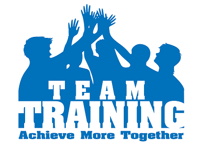

Responsive Design Demo Page ... @ Infogain Training Team

Learning and Development Department believe in providing avenues of learning to all individuals at the organization and align individual competencies with organizational objectives. The team provides need-based, timely and holistic learning solutions at the individual, team and organizational level. The training solutions are driven by the goals and needs of the employees. The training need of an employee is determined from the Quarterly Training Plan received from Training Cabinets, Project Managers individual team specific needs, Individual training requirements from TNI.